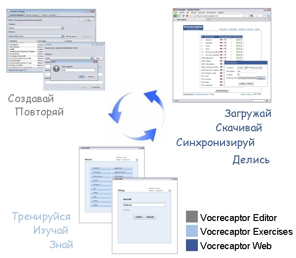

|
|
Vocrecaptor на twitter Vocrecaptor форум |
  |
|
Что такое Vocrecaptor? Проект Vocrecaptor состоит из нескольких приложений и сервисов, ставящих перед собой общую цель - помощь в улучшении словарного запаса при изучении иностранных языков. На данный момент проект включает в себя 3 подпроекта:
Vocrecaptor EditorПредставим, что вы читаете книгу на изучаемом языке (например, английском) или выполняете домашнее задание по курсам английского языка и не хотите оставить без внимания ни одного незнакомого слова и хотите его выучить. Вы можете выписать это слово в спецаильную тетрадь, но для этого можно использовать Vocrecaptor Editor.Vocrecaptor Editor - это десктоп-приложение, написанное на Java и работающее на всех платформах с установленной Java Runtime Environment (JRE) версии 6 или выше. Работа с Vocrecaptor Editor Загрузить Vocrecaptor Editor версия 1.2.2 Vocrecaptor WebVocrecaptor Web это веб-сайт на который вы можете загружать словари, созданные при помощи Vocrecaptor Editor (или демонстрационные словари) и иметь к ним доступ с разных компьютеров. Vocrecaptor Web позволяет выполнять упражнения, просматривать статистику, открывать доступ к своим словарям другим пользователям.Перейти на сайт Vocrecaptor Web Vocrecaptor ExercisesVocrecaptor Exercises это приложение, написанное с использованием технологии JavaFX, которая позволяет запускать приложение как апплет внутри браузера, как десктоп-приложение или мобильное приложение на устройствах, поддерживающих данную технологию.Перейти к упражнениям Работа с Vocrecaptor Exercises Vocrecaptor разрабатывается с использованием:
|
Упражнения:Загрузки:sampledictionaries_en-ru.zip vocrecaptoreditor-v1.2.2.jarВсе загрузки Обновления:8 октября 2009 г.
|
| Alexey Peskov, 2007-2009 | |
{kind=link}